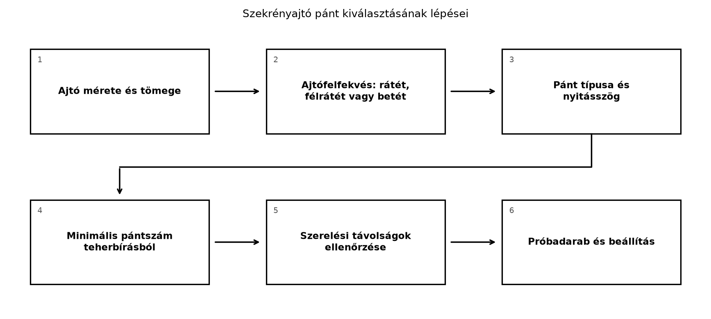

A bútorvasalat nem csak „apró szerelvény”: az ajtó lógása, a fiók szorulása, a polc leszakadása vagy egy elülső él kitörése is gyakran vasalatválasztási hiba. Ebben az alfejezetben azt tanuljuk meg, hogyan válasszunk pántot, fiókcsúszót, fogantyút, zárat, polctartót és bontható kötővasalatot úgy, hogy a bútor stabil, halk és szerelhető legyen, és hogyan számoljuk a szükséges mennyiséget.
Egy szekrényajtó vasalatának kiválasztása mindig ugyanazt az utat járja be:

A sor eleje a termékből indul ki: először mindig a fa- vagy lapalkatrészt ismerjük, utána kérdezzük a vasalatot.
Definíció. A bútorvasalat olyan – jellemzően fémből, műanyagból vagy kettő kombinációjából készülő – szerelvény, amely a bútor részeit mozgatja, zárja, megfogja, összeköti, megtámasztja vagy beállíthatóvá teszi. A vasalat lehet mozgó (pánt, fiókcsúszó, tolóajtó-görgő) vagy álló rögzítő (polctartó, láb, kötőelem).
Definíció. A pánt (műhelyi néven gyakran zsanér vagy csuklópánt) az ajtólapot a korpuszhoz vagy kerethez kapcsoló, csuklós nyitást adó vasalat. A korszerű bútorpánt általában csészés pánt: az ajtó belső oldalába egy -es, sekély csészefészket fúrunk, ebbe ül a pánt teste, a kar pedig az ajtóból kilépve a korpuszra szerelt szerelőtalphoz (pánttalp, alaplemez) kapcsolódik.
Definíció. A fiókcsúszó (fióksín) a fiók oldalára vagy aljára szerelt, egymásban futó sínpár, amely a fiókot vízszintesen vezeti, és meghatározza a kihúzhatóságot és a teherbírást.
Definíció. A bontható kötővasalat olyan mechanikai kötés, amely a korpusz- vagy keretelemeket oldható módon fogja össze. Ezzel a bútor szállításkor szétszedhető, a helyszínen újra összeszerelhető, és szükség esetén utánhúzható vagy javítható.
A vasalat kiválasztásakor három adatot mindig együtt kell nézni: működési mód, teherbírás és beépítési méret/furatkép. Ezt a hármast a katalógus műszaki adatlapja adja meg.
A leggyakoribb bútorpánt a 35 mm-es csészés pánt. A 35 mm a csésze furatátmérője; a fészekmélység 19 mm-es forgácslapnál jellemzően , de mindig a termék adatlapja a mérvadó (ellenőrizendő). Három alapváltozat:
Egy régebbi katalógus a fazettás vagy ráütődő elnevezést is használhatja; a mai gyakorlatban a rátét/félrátét/betét megnevezés egyértelműbb (ellenőrizendő: az adott gyártó jelölése).
Az ábra a három változatot vízszintes metszetben mutatja: 19 mm-es oldallap és ajtó, az ajtó hátlapjában Ø35 mm-es, 11–13 mm mély csészefészek, a csésze közepe az ajtó élétől 21,5 mm-re; a pántkar a korpusz belső oldalára szerelt talphoz fut. Teljes rátétnél a takarás 16–19 mm, félrátétnél ajtónként 7–9 mm, betétnél 0 – a rossz pántváltozat így a takarásból felismerhető.
Szabály. A pántot a szekrény ajtaja és a környező bútor között szükséges nyitásszög alapján válaszd. Belső ajtónál általában elég; sarokszekrénynél vagy nagyobb hozzáférést kívánó belső fióknál -os vagy nagyobb nyitás is kellhet.
A csészés pánt három irányban állítható:
A beállítás általában csillagcsavarhúzóval vagy -es belső kulcsnyílású csavarral történik; a pontos szerszám a gyártói adatlapról olvasandó.
Szabály (tájékoztató, gyártói adattal ellenőrizendő). A pántok számát a tömeg és a magasság együtt határozza meg. Egy pánt névleges teherbírása sok bútorpántnál körül van; ezt a saját tömeghez és a napi használathoz képest is kell értékelni. Tájékoztató darabszám:
Ezen felül a pántok száma a tömegből is ellenőrizhető:
ahol a vasalatokkal együtt szerelt ajtó tömege (), egy pánt megengedett terhelése (), és az eredményt mindig felfelé kerekítjük. A puszta képlet azonban kevés, mert a magas ajtó stabilitása miatt a fenti darabszám-szabályt is be kell tartani.
A zsanér hagyományos, egyszerű csuklópánt: két féllemeze van, amelyeket csap köt össze. Masszív, de síkban alig állítható, ezért ma inkább csak kiegészítő vagy stílusbútorokon használjuk. A zongorapánt hosszú, folyamatos fémcsukló, amely vékony, könnyű ajtókon, írólapokon, hajópadló-fedeleken osztja el a terhelést.
Megjegyzés. A csészés pánt beállíthatósága miatt a korpuszbútorokban jobban szerelhető, mint a hagyományos zsanér. A zsanér pontosabb előfúrást és pontos helyzetet igényel.
A fiók működésének nagy részét a sínpár határozza meg. A választás előtt tudnunk kell:
A fő típusok:
Szabály. A csúszó névleges hossza a fiók mélységéhez igazodjon. Például mély fiókhoz -es csúszópárt választunk, ha a korpusz belső mélysége is engedi. A csúszó tényleges beépítési hossza és furatképe gyártónként eltérhet, ezért a fúrást mindig az adatlapról kell venni.
Az ábra típusonként a sínpárt (korpuszsín, fióksín, görgő vagy golyóskosár), az elölnézeti beépítést és a kihúzás hosszát mutatja: oldalra szerelt sínnél a fiók és a korpuszoldal között tájékoztatóan 12–13 mm hézag marad (vasalat adatlapja szerint), a rejtett csúszó a fiók alatt fut, a fiókoldal sima. Egy 500 mm-es fiók részleges kihúzással kb. 375 mm-re, teljes kihúzással 500 mm-re húzható ki.
A szekrénykorpusz oldallapjait és vízszintes elemeit, galériáit, fedőlapját gyakran bontható kötőelemekkel fogjuk össze.
Figyelem. Az excenteres kötő akkor tart, ha a fészekmélység és a furatpozíció pontos. A túl mély fúrás az excenter alá kerül, a sekély fúrás megfeszíti a lapot, a gyenge lapanyagból pedig kiszakadhat. A pozíciót mindig a lap vastagságához és a gyártói adathoz igazítsuk.
A faipari gyakorlat leggyakoribb csavarjai:
Az ábra a bontható kötővasalatok és a csavarok felismerését segíti: az excenteres kötő három része (excenter, kötőcsap, hüvely), a csavaros kötőelem menetes hüvellyel, valamint a facsavar, a forgácslapcsavar, a bútorcsavar és a szeg jellemző feje, hajtása és menete. Az excenter működését a Vasalatos és bontható mechanikus kötések; furatok, fészkek, nútok alfejezet mutatja.
Szabály. Csavarozás előtt a csavar magátmérőjéhez illesztett előfúrást készítünk, a fejhez pedig süllyesztőt használunk, ha a csavarfej a felülettel egy síkban üljön. Különösen forgácslapba történő csavarozásnál a túl nagy nyomaték kiszakítja a magot; a túl hosszú csavar kidudorodik a másik oldalon.
A szükséglet-számítás menete a szokásos rajz–anyag–művelet hármas: a rajzról leolvassuk a nyílókat, fiókokat, polcokat; a jegyzékből a darabszámot; a művelettervből a szerelési sorrendet. Először mindig a kész darabok számát állapítjuk meg, utána a tartalékot.
Példa (kidolgozott). Készítsünk vasalat- és kötőelemmennyiséget egy széles, mély, magas felső szekrényhez: 2 rátét ajtó, 2 polc, polconként 4 polctartó, ajtónként 2 pánt és 1 fogantyú (a pántokhoz 4 szerelőtalp tartozik). Az ajtók mérete , tömegük egyenként kb. (forgácslap, vasalat nélkül), ezért 2 pánt elég. A szekrénykorpuszt 8 excenteres kötéssel szereljük. Minden pánthoz 2, a hozzá tartozó szerelőtalphoz további 2 rögzítőcsavart számolunk (adatlap szerint, ellenőrizendő); a fogantyúcsavar a fogantyúval együtt jár.
| Tétel | Mennyiség | Egység | Egységár (Ft) | Érték (Ft) |
|---|---|---|---|---|
| Csészés pánt, rátét, 95° | 4 | db | 850 | 3 400 |
| Szerelőtalp | 4 | db | 250 | 1 000 |
| Fogantyú | 2 | db | 1 200 | 2 400 |
| Polctartó csap | 8 | db | 120 | 960 |
| Excenteres kötő | 8 | db | 180 | 1 440 |
| Forgácslapcsavar | 18 | db | 15 | 270 |
| Összesen | 9 470 |
A táblázatban szereplő árak mintaárak; a mennyiségeket a rajz és a gyártói adatlapok alapján kell ellenőrizni. A csavaroknál db a szükséglet, plusz tartalék: db. A vasalatköltség ezután a bútor önköltségébe kerül.
Számítás. Ellenőrizzük a pántok számát teherbírás alapján is. Az ajtó tömege vasalattal együtt legyen . A választott pánt teherbírása . Ekkor
Tehát a 2 pánt teherbírásra elegendő, és a -es ajtómagasság miatt a magassági darabszám-szabály is érvényesül.
Szabvány. A bútorvasalatokra és a bútorok biztonságára vonatkozó követelményeket a vonatkozó magyar és európai szabványok, valamint a gyártói műszaki adatlapok tartalmazzák. A csészés pántok, fiókcsúszók és bontható kötővasalatok esetén a beépítési méretek, teherbírási és élettartamadatok gyártónként eltérhetnek; a katalógusjelölések és a 32-es rendszerű furatképek az MSZ EN 15570 / bútorvasalati termékszabványok környezetébe tartoznak (ellenőrizendő: pontos szám, hatály). Gyermekbútoroknál, irodabútoroknál és beépített termékeknél a biztonsági követelmények szigorúbbak lehetnek (ellenőrizendő: termékcsoport-szabvány).
Technológiai előírás. A pántfészek készítése és a pánt állítása az alábbi lépésekkel végezhető. A fúrást furatkép-próbadarabon ellenőrizzük.
Minőségellenőrzés. A vasalatszerelés ellenőrzését a következőkkel végezzük:
Eltérésnél először a furatpozíciót és a bázisélt ellenőrizzük, utána a vasalat típusát és a beállítási sorrendet.
Egy konyhabútor-felújításnál az asztalos azt tapasztalta, hogy a legalsó széles, mély fiók a kihúzás végén megszorul, és a két oldalsó, régi görgős sín alatt a forgácslap széle elkopott. A fiókban edények és konzervdobozok voltak, a teljes tömeg körüli volt, de a görgős sín névleges teherbírása volt (mintaadat). A javításhoz nem volt elég a sín cseréje: a szorulás miatt a furatok is kiszélesedtek. A tanuló a korpusz belső szélességét mérte, a fiók mélységét -ben rögzítette, és teljes kihúzású, golyós, teherbírású, -es csúszópárt választott. A fúrást próbadarabon ellenőrizte, a sínt vízmértékkel párhuzamba állította, és a fiók szélességét a szükséges oldaltávolsággal csökkentette. A fiók ezután üresen is, terhelten is simán futott. Tanulság: a teherbírást mindig a tényleges használati tömegből kell megválasztani, és a sín hosszát a fiókmélységhez kell igazítani.
1. feladat (A) Fogalmazd meg, mi a különbség a zsanér és a csészés pánt között, és mikor választanád a csészés pántot.
2. feladat (A) Sorold fel a fiókcsúszó három fontos kiválasztási adatát, és egy-egy szóval indokold, miért fontos.
3. feladat (B) Egy tömör bükk ajtó mérete . A bükk sűrűsége (tájékoztató). A pántok teherbírása . Számítsd ki az ajtó tömegét és a pántok minimális számát teherbírásból. Mit javasolsz a magasság alapján?
4. feladat (B) Egy fiók mélysége , a korpusz belső szélessége . A golyós fiókcsúszó beépítési oldaltávolsága (tájékoztató). Hány mm hosszú csúszót válassz, és hány mm széles legyen a fiók, ha oldalanként 12,5 mm oldaltávolság kell?
5. feladat (C) Egy beépített szekrényben két, egyenként -es, nehéz tölgy ajtó van. A pánt teherbírása , a tölgy sűrűsége kb. (tájékoztató), így egy ajtó tömege kb. , és a teherbírási képlet szerint pánt elég lenne, de a magassági szabály 4 pántot javasol. Magyarázd meg, miért ne válasszuk a 3 pántot, még akkor sem, ha a tömegszámítás éppen megengedi.
6. feladat (D) Készíts vasalat-anyaglistát egy -es (szélesség × magasság × mélység) éjjeliszekrényhez: 1 felső fiók (fiókmélység , előlap magas), alatta 1 ajtó (), 2 polc, polconként 4 polctartó, 1 fogantyú a fiókon és 1 az ajtón. A korpuszt 8 excenterrel szereljük. Add meg a mennyiségeket; az árakat nem kell számolni.
1. feladat. A zsanér hagyományos csuklós pánt, amely két féllemezt és csapot tartalmaz, és alig állítható. A csészés pánt az ajtó belső oldalába fúrt -es csészefészekbe ül, karral csatlakozik a szerelőtalpba, és három irányban állítható. Könnyen szerelhető, ezért sorozatgyártott korpuszbútoroknál ezt választjuk.
2. feladat. A fiókcsúszó kiválasztási adatai: terhelhetőség (a fiók és tartalom tömege), hossz (a fiók mélysége és a korpusz belső mélysége), beépítési oldaltávolság (a fiók szélességi mérete és a furatkép). Ezek nélkül a fiók szorul, beakad vagy túlterhelt lesz.
3. feladat. Térfogat: . Tömeg: . Pántok teherbírásból: pánt. A -es magasság miatt azonban legalább 4 pánt szükséges, mert a magas ajtó feszülése és stabilitása miatt nem elég a tömeg alapján számolt darab. A magassági szabályt is be kell tartani: : 4 pánt.
4. feladat. A fiók mélysége , ezért hosszú csúszót választunk, ha a korpusz belső mélysége is legalább ennyi. A fiók szélessége: . Tehát a fiók kész szélessége .
5. feladat. A magas ajtó nemcsak a pántokra ható függőleges terhet adja, hanem hosszú csuklóoldal mentén hajlító, feszítő mozgást is. Ha csak 3 pánt van, az ajtó középtáji része oszcillálhat, a csavarok kiszakadhatnak, a 19 mm-es anyagban a fészkek hamarabb fellazulnak. A 4 pánt elosztja a terhelést és a csuklóoldal merevségét növeli, ezért a magassági szabályt nem írja felül a puszta tömegszámítás.
6. feladat. Vasalatlista az éjjeliszekrényhez:
A konkrét furatképeket és a csavarhosszakat a választott vasalat adatlapja alapján kell felvenni.
A bútorvasalat a bútor mozgó, záró, megfogó és bontható szerelvénye. A csészés pánt -es csészefészekbe ül, felfekvése lehet teljes rátét, félrátét vagy betét. A pántok számát az ajtó tömege és magassága együtt adja: , és magassági tájékoztató szabály szerint kb. -ig 2, -ig 3, -ig 4 pánt szükséges. A pántot három irányban állítjuk: magasság, oldal, mélység. A fiókcsúszó teherbírását a fiók és a tartalom együttes tömegéből kell választani, hosszát a fiók mélységéhez igazítjuk; a golyós, rejtett, teljes kihúzású és önbehúzó változatok más-más futáskultúrát adnak. A bontható kötővasalat (excenter, csavaros hüvely) a korpusz oldható, szerelhető kötését szolgálja. A csavarokat anyaghoz és lapvastagsághoz választjuk; túl hosszú vagy túl nagy nyomatékú csavar tönkreteszi a fogadó lapot. Továbbvitt eredmény. A vasalatválasztás, a beállítási sorrend és a szükséglet-számítás a szerelésnél és a rögzítéstechnikánál is alap: használjuk a Rögzítéstechnika: falba, padlóba, mennyezetre és az Szereléshez szükséges megmunkálások pozicionálása, jelölése, beállítása alfejezetekben.
Forrástípusok: bútorvasalat-gyártók műszaki katalógusai és szerelési adatlapjai, a 32-es rendszerű furatkép-rendszerek leírásai, faipari szakkönyvek, az MSZ EN 15570 környezetébe tartozó bútorvasalati szabványok (ellenőrizendő: pontos szám, hatály), valamint a bútorok biztonságára vonatkozó termékszabványok. Ellenőrizendő: a csészefészek pontos átmérője, mélysége és az éltávolság, a pántok teherbírása, a fiókcsúszó oldaltávolsága, a -es furatkép szerelőtávolsága, a csavarhossz ajánlása, a mintaárak és a pántszámra adott magassági határok.